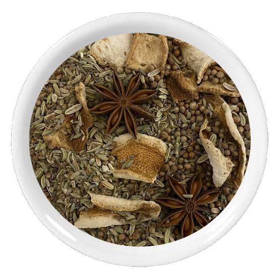

La Fenouillette
de
Toulouse


⟹ Le Fenouil des Coteaux du Lauragais ⟸
Le fenouil est connu et cultivé depuis l'Antiquité pour ses vertus digestives et aromatiques. Sur les coteaux ensoleillés du Lauragais et de la campagne toulousaine, la plante pousse à l'état sauvage depuis des temps très anciens : le nom même du village de Fenouillet, aux portes nord de Toulouse, témoigne de cette présence ancestrale du fenouil dans le paysage de la Haute-Garonne.

De génération en génération, les familles de la campagne toulousaine ont cueilli les graines de fenouil sauvage en fin d'été pour les faire macérer dans l'eau-de-vie et composer une liqueur digestive maison, comme il en existe de semblables dans d'autres terroirs français, de Brive au Jura. La recette, transmise oralement, variait d'une maison à l'autre selon les plantes d'appoint ajoutées : anis, badiane ou zestes.
On cueillait le fenouil sauvage sur le talus en rentrant des champs, et on le mettait à macérer pour l'hiver.
— Tradition orale des campagnes du LauragaisDès le XIXe siècle, les maisons de liquoristes toulousaines, à l'image de la maison Cabanel fondée en 1868, développent en parallèle un véritable savoir-faire autour des liqueurs de plantes et des macérations aromatiques, dans la même famille de spiritueux artisanaux que la fenouillette rurale. Aujourd'hui, quelques producteurs de Haute-Garonne perpétuent cette tradition domestique et l'adaptent aux goûts contemporains, entre apéritif rafraîchissant et ingrédient de cocktail.
Apéritif rafraîchissant : servie bien fraîche ou allongée d'eau, elle ouvre l'appétit avec sa note anisée délicate.
Digestif : en fin de repas, elle prolonge la tradition médicinale ancienne du fenouil, plante réputée pour faciliter la digestion.
Pâtisserie : quelques cuillères parfument pâte à crêpes, brioches ou gâteaux d'un fin goût anisé.
Mixologie contemporaine : les bartenders toulousains la réintroduisent aujourd'hui dans des cocktails aux accents locaux.
La campagne toulousaine et le Lauragais, terres de coteaux calcaires ensoleillés, restent le territoire de prédilection du fenouil sauvage et des liqueurs qui en sont issues.
Fenouillet commune du nord toulousain dont le toponyme témoigne de l'ancienneté de cette plante dans le paysage local.
Toulouse et ses maisons de liquoristes, héritières d'une tradition régionale de liqueurs et macérations de plantes.
Lauragais et Frontonnais campagnes vallonnées où se transmet encore, de façon familiale, la recette de la fenouillette maison.
Marchés de pays rendez-vous des producteurs locaux, où l'on trouve encore ces liqueurs artisanales en vente directe.